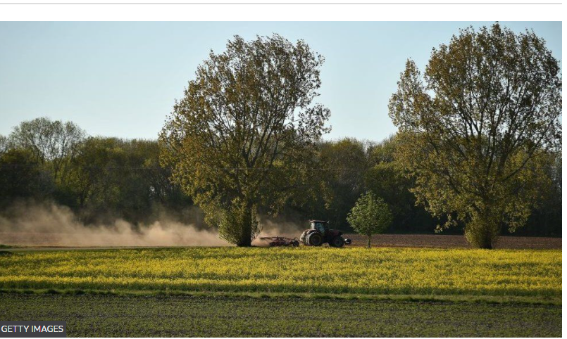

Climate:
Farmers could be paid for post-Brexit 'rewilding' land changes
By Claire Marshall
BBC Environment & Rural Affairs Correspondent
2 days ago
Brexit
Farmers and landowners in England could be paid to turn large areas of land into
nature reserves,
or to restore floodplains, under new government agriculture subsidies.
When the UK was part of the EU, farmers were given grants based on how much land they farmed.
Following Brexit, the government has pledged to pay based on how farmers care for the environment.
But environmental groups say the new plans lack detail and may not deliver.
In what the government describes as "radical plans", landowners and farmers will be allowed to bid for funding to turn vast areas of land - between 500 and 5,000 hectares - over to wildlife restoration, carbon sequestration, or flood prevention projects.
"What we're moving to is a more generous set of incentives for farmers doing the right thing," Environment Secretary George Eustice told the BBC.
"We can have both sustainable, profitable food production, and see a recovery for nature as well."
Agriculture is a devolved issue meaning that each UK nation has its own plans.Wales, for example, has said its new funding scheme will promote environmental benefits and be in place from 2025.
Improving the environment
Under the EU's Common Agricultural Policy, farmers were given taxpayers' money largely based on the amount of land they farmed: the more land they held, the more cash support they got. In 2020 about £3.5bn was handed out.
Now the government says that instead of rewarding farmers for how much land they work, it wants to encourage farmers to introduce practices that improve the environment.
Farming creates 10% of the UK's greenhouse gas emissions, and large-scale
agriculture has long been accused of degrading the environment.
- New plan to pay farmers who protect winter soil
- Why do farmers get paid by taxpayers?
- Farmer claims subsidy reforms are distraction to 'buy us off'
Applications will shortly open for the first wave of "Landscape Recovery" projects. Mr Eustice said the scheme would lead to "fundamental land use change" creating new woodlands, restoring peatlands, and other "intensive interventions".
The aim of these pilot projects is to create 10,000 hectares of restored wildlife habitat, which could help sequester carbon and restore England's rivers and streams. Mr Eustice said he hoped it would lead to more large-scale rewilding projects like the Knepp estate in West Sussex.
But Craig Bennett, chief executive of the Wildlife Trusts, said the "golden opportunity" of the agricultural transition was in danger of being "wasted" .
"While we're hearing the right noises from the government, the devil will be in the detail, and the detail is still not published nearly six years after the EU referendum," he said.
James Robinson, a farmer in Cumbria with 300 acres of land, said it was difficult to judge the proposals because they still lacked detail.
"It will make a difference but we need action now. The way farming has been run for the last 40-50 years has been for field production at the expense of environment. We can't keep going as we are, we need to make a change now, and as farmers we need to step up and make a change. But we also need government support to do that and it's still not quite there yet," he said.
There were also concerns among tenant farmers about how they could take part. George Dunn of the Tenant Farmers Association said: "Payments are being removed from tenant farmers in real time while we have a vague commitment for further work to be undertaken on how tenants can access schemes".
Dr Alexander Lees, from Manchester Metropolitan University, said the schemes fitted well with the challenges of reversing declines in Britain's most endangered species - those on the Red List. But the aspirations of the pilot seemed "simultaneously low and over-ambitious", he said.
"It would seem very hard to reverse biodiversity loss for the 'most threatened species' in just 10,000 hectares," he added.
"If we are serious, then we need to be racing towards the 300,000 hectare target as fast as possible."
An additional plan, called the Local Nature Recovery scheme, will pay farmers to deliver on small-scale environmental priorities, such as "creating wildlife habitat, planting trees, or restoring peat and wetland areas".
Mr Eustice said it was "about individual farms or groups making space for nature on part of their holding, perhaps creating water features on some of the less productive land, or hedgerows for breeding sites for birds."
The government says, by 2030, the policy aims to:
- halt the decline in species
- put up to 60% of England's agricultural soil under sustainable management
- and by 2042, restore up to 300,000 hectares of wildlife habitat
Details of the broader Sustainable Farming Incentive (SFI), which aims to support sustainable farming practices, were revealed in December.
The Wildlife Trusts, National Trust and RSPB were highly critical of the SFI plans,saying they were "deeply concerned" that they did not go far enough.
According to the Wildlife Trusts, the SFI allows 30% of arable soils to be left bare over winter, which is damaging to soil health. The standards also do not address the damaging impact of pesticides and artificial fertilisers on soil, it said.
It also claimed that farmers would be left to measure and assess their own management plans.
Mr Eustice said judging how successful the plan is would be a "complex" thing to do in the years ahead.
He said: "We've been running agri-environment schemes in one form or another for well over 20 years, and each of those have been evaluated. It may not be perfect, but we think it's reasonably accurate. And you have to work on something."
Related Topics